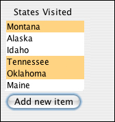
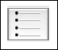
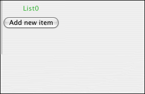
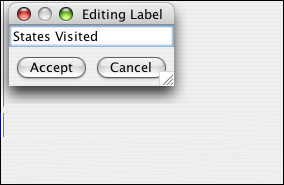
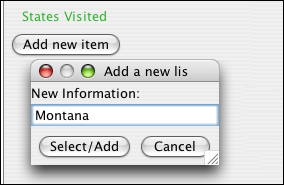
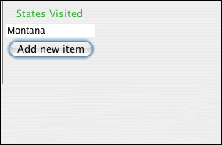

List widget
The list widget is similar to the standard pull-down widget, but it allows the user to
select multiple, simultaneous values. The list widget can also be thought of as a collection
of checkboxes, where the value
for each checkbox is either true (selected) or false (not selected).
To select more than one item in a list, control-click (or command-click on the Mac) the items
you wish to select. In this example, Montana, Tennessee and Oklahoma have been selected
as true.
Example:

In the Create Form tab, click on the list widget icon in the toolbar.

The list widget appears with a default name.

Double click on the name to change it to an appropriate name for your list.

Click on the "Add new item" button to add items to the list. In the dialog box that
appears, enter the name of the item you would like to appear in the list.

You may continue adding items here in Create Form mode, and you may also add to the list
later, in Enter Data mode.
